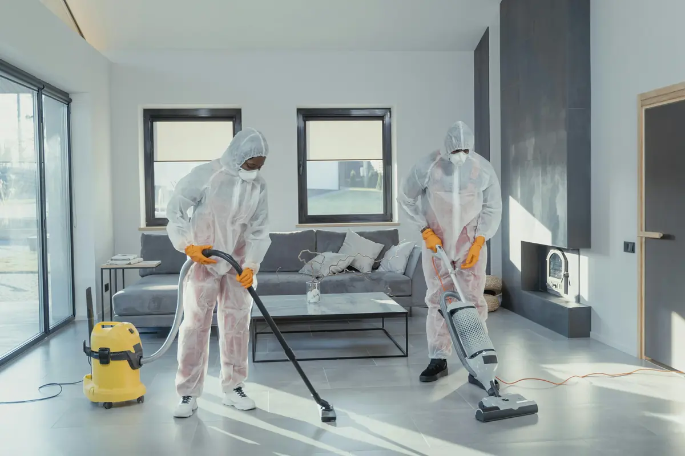

Services nettoyage
Saint-Tropez
Locaux, villas, commerces, boutiques, vitrines, hôtels, restaurants — SNTM SAP propose une solution de nettoyage professionnel pour chaque espace sur Saint-Tropez et le Golfe du Var.
Toutes nos
interventions
De la boutique du vieux port au grand hôtel de Sainte-Maxime — SNTM SAP s'adapte à chaque type d'espace avec des protocoles sur mesure.
 01
01
Nettoyage locaux professionnels
Saint-Tropez
Entretien régulier de vos espaces de travail sur Saint-Tropez et le Golfe du Var. Protocoles adaptés, intervention discrète avant, pendant ou après votre activité selon vos besoins.
- Bureaux et open-spaces
- Salles de réunion et de conférence
- Sanitaires et vestiaires
- Espaces communs et couloirs
- Cuisines et espaces de restauration
 02
02
Nettoyage commerces & boutiques
Saint-Tropez
Votre image de marque commence par la propreté de votre espace de vente. Nous intervenons tôt le matin pour ne pas perturber votre activité. Nettoyage de boutiques sur Saint-Tropez, Ramatuelle, Gassin et Cogolin.
- Surfaces de vente et présentoirs
- Vitrines intérieures et extérieures
- Espaces d'accueil et caisse
- Réserves et zones de stockage
- Sanitaires clients
 03
03
Nettoyage villas & résidences
Saint-Tropez
SNTM SAP assure l'entretien et le nettoyage de villas à Saint-Tropez, Ramatuelle, Gassin et Sainte-Maxime. Service personnalisé, discrétion totale, respect des espaces de prestige.
- Villas et résidences privées
- Terrasses, piscines et extérieurs
- Nettoyage avant/après location saisonnière
- Entretien régulier ou ponctuel
- Intervention confidentielle
Nettoyage de vitrines
Saint-Tropez
Transparence parfaite et image soignée. Techniques professionnelles, produits spécifiques pour des vitrines impeccables à Saint-Tropez et sur tout le Golfe — sans traces ni coulures.
- Vitrines de magasins et boutiques
- Baies vitrées et verrières
- Façades en verre
- Surfaces difficiles d'accès
- Miroirs et surfaces réfléchissantes
 05
05
Nettoyage écoles & collectivités
Var 83
Protocoles de nettoyage spécifiques aux établissements scolaires et collectivités du Var. Produits adaptés aux enfants, hygiène irréprochable, respect des normes sanitaires.
- Salles de classe et ateliers
- Cours de récréation et préaux
- Réfectoires et cuisines collectives
- Sanitaires collectifs
- Bibliothèques et salles informatiques
Hôtels, restaurants
& interventions
spéciales
SNTM SAP maîtrise les exigences spécifiques de l'hôtellerie, de la restauration et des environnements sensibles sur le Golfe de Saint-Tropez.
Nettoyage hôtels & restaurants
Saint-Tropez
Intervention quotidienne selon les standards hôteliers. Cuisines, salles, chambres, terrasses. Protocoles HACCP respectés. Nettoyage discret, ponctuel, sans perturber votre clientèle sur Saint-Tropez, Sainte-Maxime et le Golfe.
Demander un devis →Cabinets médicaux & paramédicaux
Var 83
Protocoles de désinfection rigoureux pour les environnements médicaux du Var. Respect des normes en vigueur. Produits virucides, bactéricides, désinfectants homologués.
Demander un devis →Nettoyage après chantier
Saint-Tropez & Var
Remise en état complète après travaux, construction ou rénovation sur Saint-Tropez et le Var. Élimination poussières de plâtre, silicone et résidus de chantier. Résultat livrable immédiatement.
Demander un devis →Vos questions sur
nos services
Intervenez-vous pour le nettoyage de villas à Saint-Tropez ?
Oui, SNTM SAP assure le nettoyage de villas et résidences de prestige sur Saint-Tropez, Ramatuelle, Gassin, Grimaud et Sainte-Maxime. Service personnalisé et confidentiel, adapté aux propriétés de standing.
Proposez-vous le nettoyage d'hôtels et de restaurants à Saint-Tropez ?
Oui, nous intervenons pour le nettoyage d'hôtels et de restaurants à Saint-Tropez et Sainte-Maxime. Protocoles HACCP, normes d'hygiène strictes, intervention quotidienne ou ponctuelle selon vos besoins.
Faites-vous le nettoyage de vitrines de boutiques à Saint-Tropez ?
Oui, le nettoyage de vitrines de boutiques et commerces à Saint-Tropez fait partie de nos prestations phares. Baies vitrées, façades en verre, sans traces ni coulures — résultat impeccable garanti.
Intervenez-vous pour le nettoyage après travaux dans le Var ?
Oui, nous assurons la remise en état après chantier sur Saint-Tropez et dans tout le Var. Poussières de plâtre, résidus de travaux, nettoyage fin de chantier — livraison clé en main.
Tous nos services
à Saint-Tropez
Devis gratuit · Réponse sous 24h · Golfe de Saint-Tropez